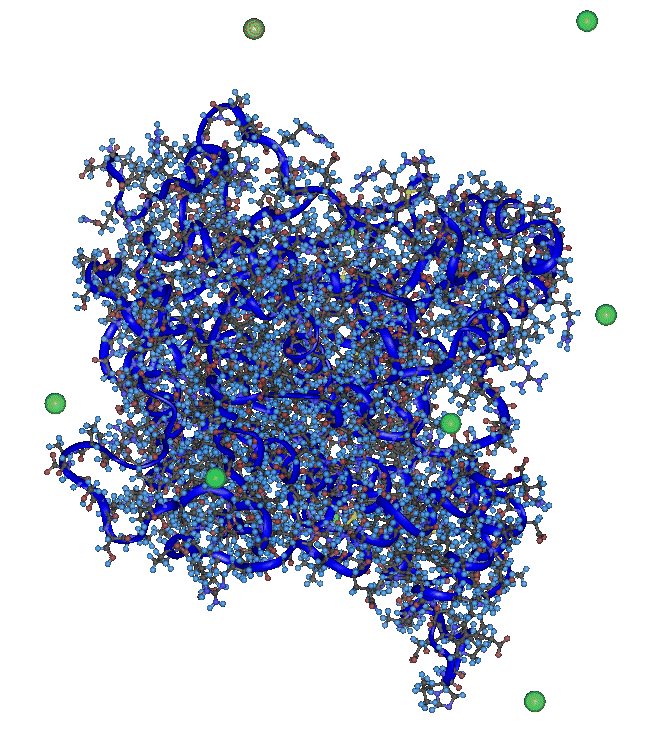

Acetylcholinesterase

More on the Acetylcholinesterase simulations using NWChem can be found in
ENVISION,
the NPACI/SDSC Quarterly.
Acetylcholinesterase molecular modeling and simulations studies:
M.K.Gilson, T.P.Straatsma, J.A.McCammon, D.R.Ripoll, C.H.Faerman,
P.H.Axelsen, I.Silman and J.L.Sussman,
Open "Back Door" in a Molecular Dynamics Simulation of Acetylcholinesterase
Science, 263,1276-1278 (1994).
S.Tara, T.P.Straatsma and J.A.McCammon,
Acetylcholinesterase Unliganded and Complexed with Huperzine A: A Comparison
of Molecular Dynamics Simulations
Biopolymers, 50, 35-43 (1999).
S.Tara, V.Helms, T.P.Straatsma, P.Taylor and J.A.McCammon,
Molecular Dynamics of Mouse Acetylcholinesterase Complexed with Huperzine A
Biopolymers, in press.